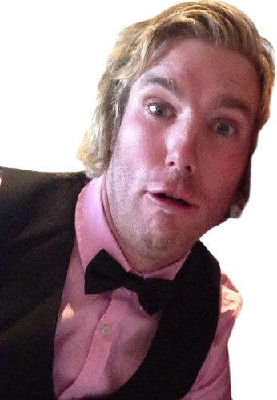

The year was 2017 and the world was unknowingly on the precipice of a sporting revolution though it didn't know it at the time. SportsMasters founder, Gary, had surpassed the ancient early 30's, a turning point where his once mighty (in his own mind) physique suddenly decided that 'sporting prowess' was best demonstrated by the ability to lift a TV remote with one hand, and a stubby in the other. Faced with the devestating realisation that his body was rapidly becoming a temple of creaking joints, dodgy hammies and a paunch that could rival a small moon, Gary desperately needed an arena where his sporting superiority, which was by all accounts, purely theoretical - could still shine. Thus out of unadulterated vanity and a desperate need to feel relevant, SportsMaster was born. This was a competition forged not on the field, but on the couch, where champions are made from correct predictions and a 4K Kayo subscription.
Gary wasted no time, launching the competition with the confidence of a man who only uses a mirror from the eyebrows down, focusing on standard, predictable sports like soccer, AFL, cricket and basketball. Unsurprisingly (to Gary at least), he dominated the early years, conveniently sweeping two of the first three seasons and cementing his status as a self-confessed sports tipping demigod. However, the fates are fickle and since that glorious, brief honeymoon period, the tipping crown has since been cruelly witheld.
Rather than acknowledge that perhaps his expertise was a mere flash in the pan, Gary has embarked on a frantic, escalating quest for victory by perpetually raising the stakes, and lowering the relevance, all while muttering something about still being the only two time SportsMaster champion. Now, participants must not only predict the outcome of an AFL or cricket match, they must also sometimes predict the winner of an Estonian beauty pageant, the exact amount of rain in Patagonia 17 days into winter, or the emotional stability of a particular redhead who has been participating in SportsMaster since day one (I'll let you guess which one).
SportsMaster has evolved from a competition of skill to a glorious, chaotic testament to one man's increasingly desperate mission to win something before he hits 40. We hope you enjoy it!
